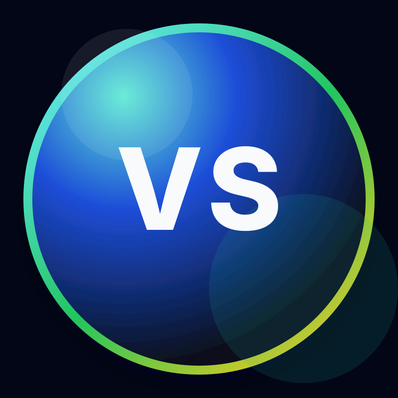

Vedant Sawant
Backend, Data & ML Engineer
Penn State CSE graduate student with 2+ years of experience building production software, agentic AI prototypes, MLOps workflows, data platforms, cloud automation, Linux systems, and applied ML workflows in healthcare environments. I focus on reliable systems, practical AI, clear interfaces, and operationally useful machine learning.
About Me
I am a Computer Science and Engineering graduate student at Penn State with experience across backend engineering, data pipelines, machine learning workflows, and applied AI. My recent work spans Databricks ETL, OMOP data modelling, FastAPI services, deployment automation, Linux systems, and computer-vision workflows for healthcare products.
My strongest work sits at the intersection of backend systems, data platforms, and ML infrastructure. I like building practical production software: clear data flows, reliable APIs, measurable performance, and tools that help teams move faster.
I am targeting backend engineering, data engineering, MLOps, machine learning engineering, AI engineering, and software engineering roles where I can own real systems end to end.
Details
State College, Pennsylvania, United States
M.S. Computer Science and Engineering
Experience
4 positions
Projects
3 projects
Certifications
3 certifications
Education
Academic background and qualifications
Penn State University
M.S. in Computer Science and Engineering
University Park, Pennsylvania
University of Mumbai
B.E. in Computer Engineering
Mumbai, India
Skills
Cleanly grouped technologies I use across backend, data, ML, cloud, and systems work.
Programming Languages
Backend & APIs
Data Engineering
ML, NLP & LLMs
Databases & Storage
Cloud, DevOps & Systems
Computer Vision & Robotics
Engineering Practices
Observability & Team Tools
Latest Experience
View allMachine Learning Operations Intern
Geisinger Health System • Remote, U.S.A.
- Built and maintained production Databricks ETL pipelines using PySpark, Delta Live Tables, and Delta Lake to convert Epic Clarity EHR data into OMOP CDM across 120+ healthcare facilities and 200M+ patient records.
- Optimized pipeline execution by replacing full refreshes with incremental daily runs using Databricks Workflows, Asset Bundles, and parameterized notebooks, reducing runtime from 3 hours to 15 minutes.
- Orchestrated 4 Databricks jobs spanning 40+ OMOP tables and 10+ notebooks, improving reliability and repeatability of scheduled clinical data workflows.
- Built and evaluated a 1-year mortality risk workflow using Random Forest models with demographics, body metrics, CBC, and metabolic lab values, achieving 0.94 test AUC and 0.84 recall.
- Wrote Databricks SQL queries with joins, CTEs, and window functions to validate OMOP transformations, document table logic, and support analytics workflows.
- Built Databricks Genie, knowledge assistant, and supervisor-style agentic prototypes to route queries across documentation retrieval, data exploration, and tool-based analytics.
Featured Projects
View allMeetMind
Live meeting copilot that records microphone audio, transcribes it with Groq Whisper Large V3, surfaces live suggestions, and expands clicked prompts into meeting-ready answers. ...
Reinforcement Learning Maze Solver
Maze-solving environment for comparing Deep Q-Networks and Q-Learning with configurable exploration strategies and training visualizations....
Improved MeaCap
Reproduced and documented an improved implementation of MeaCap for memory-augmented zero-shot image captioning with CLIP features and COCO-style evaluation....
Get in Touch
Open to backend engineering, data engineering, machine learning, MLOps, AI engineering, and software engineering roles. Send a note if you want to discuss production systems, healthcare data platforms, or applied ML workflows.
Send a Message
Contact Information
Phone
+1 (814)-280-8278Location
State College, Pennsylvania, United States